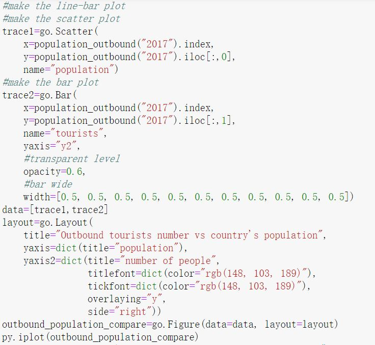

World tourism analysis
Home page
inbound tourism analysis
outbound tourists analysis
GDP and tourism
Summary
World outbound tourists distribution
show python code
The world map shows from 2007 to 2017, people in Europe, North America and East Asia like traveling abroad the most. And China is the fastest growing country of outbound traveler.
Top countries where people like to travel
show python code
The line chart plots the top 10 countries where people like to travel the most. Again, 6 of 10 are European countries. The number of people traveling abroad in China had tripled within 10 years. This is due to the relaxation of issuing tourists visa to Chinese. Germany and Hong Kong fluctuate in the second and third places.
Outbound tourists number compare to country's population
show python code

The multi-plot compares the outbound tourists number and the country's population. Although China has the leading number of tourists, it is only 10% of the total population. The UK, Poland, Hong Kong, and Germany tourists number is higher than the population number, which means these countries' outbound travel times per capita is over 1.
Tourists from which countries spend the most (exclude international transportation)
show python code
The stacked bar plot shows the per capita spending for the top countries travelers. Before 2014, French and American spent the most, after 2014, Chinese spending is the highest. Poles and Hong Kong people spent much less than the other countries, recalling the result of the previous plot: these two countries per capita travel time is very high, so we can conclude that people in these two countries have many short-distance trips.